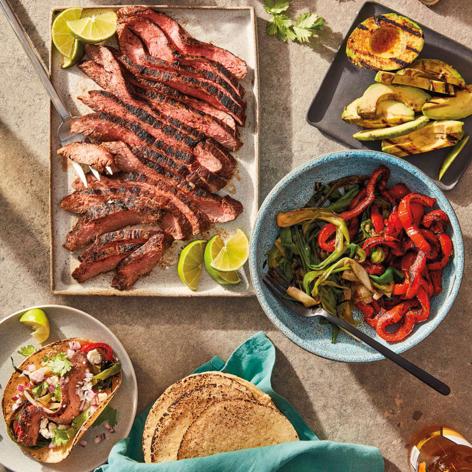

Grilled flank steak and avocado soft tacos

Description
This amazing combination of grilled flank steak, peppers, scallions and (yes!) avocado makes a super-flavorful weeknight supper or party dish. In addition to adding a smoky flavor to the avocado, grilling the avocado makes them extra creamy. If you want char marks on the tortillas, don’t wrap them in foil. Lay them in a single layer on grill until heated and grill marks appear.
Ingredients
- Corn tortillas
- Granulated garlic
- Kosher salt
- Chili powder
- Ground cumin
- Avocado
- Olive Oil
- Sweet red pepper
- Uncooked scallion
- Uncooked lean flank steak
- Uncooked red onion
- Crumbled feta cheese
- Cilantro
- Fresh lime
- Hot Sauce
Steps
- Off heat, coat grill rack or grill pan with nonstick spray. Preheat gas grill or grill pan to medium-high, or prepare medium-high fire in charcoal grill.
- Stack tortillas and wrap in foil. In small bowl, combine granulated garlic, salt, chile powder, and cumin. Halve, pit, and peel avocado. Brush cut sides of avocado halves with 1/2 tsp oil and sprinkle with 1/4 tsp spice blend.
- Core and seed bell peppers. Slice each into 6 rings and transfer to large bowl. Halve scallions crosswise and add to peppers. Drizzle vegetables with remaining 1 tsp oil and toss with 1 tsp spice blend. Rub remaining spice blend all over steak.
- Transfer packet of tortillas to grill. Arrange steak, vegetables, and avocado on grill. Grill vegetables and avocado until charred, 2 to 3 minutes per side. Transfer to plate. Grill steak to desired doneness, 4 to 5 minutes per side for medium-rare. Transfer steak to cutting board and let rest for 5 minutes. Slice steak very thinly against grain.
- Cut each avocado half into 6 pieces and mash 1 piece down center of each tortilla. On each tortilla, layer 1 pepper ring, 2 scallion pieces, and about 1 oz steak. Garnish with onion, cheese, and cilantro. Serve with lime wedges and hot sauce.